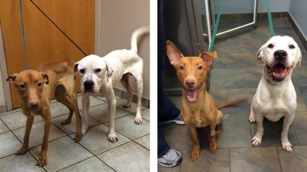

Sobre Nosotros: Nuestra Historia y Compromiso
¿Quiénes Somos?
Amigos de Cuatro Patas nació en el año 2023 de la mano de un pequeño grupo de voluntarios conmovidos por la creciente población de animales abandonados en nuestra ciudad. Lo que comenzó como una iniciativa de rescate de fin de semana, pronto se formalizó como una Organización No Gubernamental (ONG) con la misión clara de ser un refugio, un centro de rehabilitación y una voz poderosa para aquellos que no pueden hablar.
Hoy, operamos bajo los principios de ética, transparencia y amor incondicional.


2. Nuestras Habilidades y Cualidades Distintivas
Lo que nos define en cada rescate y programa:
- Rescate de Alta Complejidad: Experiencia en la movilización y atención de casos graves de maltrato o accidentes.
- Rehabilitación Conductual: Contamos con personal capacitado para trabajar la socialización y traumas de los animales.
- Transparencia Financiera: Reportes accesibles sobre el uso de donaciones.
- Programa "Adopción de Oro": Éxito comprobado en la colocación de animales senior o con necesidades especiales.
3. Línea de Tiempo: Nuestra Historia
Un vistazo a los hitos que definieron a Amigos de Cuatro Patas:
- 2023 - Fundación: Se realiza el primer rescate oficial (la perrita "Esperanza") y se constituye el grupo inicial.
- 2024 - Legalización: Obtención del estatus de ONG y Personería Jurídica. Se inicia la recaudación formal.
- 2025 - Expansión: Inauguración del primer centro de rehabilitación con capacidad para 50 animales.
- 2025 - Campañas: Lanzamiento de la campaña de esterilización masiva "Cero Abandono", alcanzando 1000 procedimientos.
- 2025 - Logro Actual: Celebración del rescate número 500 y una tasa de adopción del 90%.